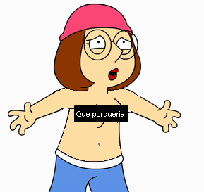

Christopher Cross Griffin
 De: La Frikipedia, la enciclopedia extremadamente seria.
De: La Frikipedia, la enciclopedia extremadamente seria.
.jpg/150px-muerto_3(2).jpg)
|
Muerto
El autor de este artículo, al parecer, se ha ido a una de sus citas al WC y suponemos que murió como el desdichado de aquí a la izquierda.
Así que en su memoria, no seas cabrón, ponle más chorradas al artículo.
|
De la serie grandes personajes:
Christopher Cross Griffin
Aquí con la señorita Barrimore antes de irse a
follar como locos casa
| Nacimiento
|
1987
|
| Muerte
|
Ni idea, se sospecha que es inmortal e inmoral.
|
| Ocupación
|
Estudiante de Quahog, por un tiempo encargado del programa espacial de Petoria.
|
| Nacionalidad
|
Quahogano.
|
| Malo o bueno
|
Tan malo como para dibujar a su padre como gato.
|
| Atentados contra la humanidad
|
Solo contra Yamcha en la lucha contra Meg
|
| Religión
|
Pseudocatólico, Ateo
|
| Notas
|
Su dieta es idéntica a la de su padre.
|
Segundo de los hijos de Peter Griffin y el heredero natural de su gilipollez e idiotez, no reconocido por Stewie y violado por Meg, su palurda hermana.
Vida en familia
Chris resulta de la unión entre Peter Griffin y su guarra esposa Lois, en un intento de encontrar a un futuro Petoriano realmente a la altura de su lerdo padre.
De la relación con su padre, cabe señalar que el tiene una enorme polla, muy distinta del patrón Griffin. Por irónico que parezca, es un firme candidato a dominar el mundo mediante su genial idiotez.
Respecto de su madre, el no se ha llevado muy bien con ella, debido a un trauma digno de estudio por parte de Gregory House. Dado que a ella no le gusta ni por asomo la Frikipedia, el hace lo que está en sus manos para que ella se tenga que joder. Incluso tuvieron un conflicto por una revista porno que Peter le dió.
 La
puta que le robó su inocencia.
Con Meg la cosa es peor, incluso al grado de pelear por el poder de la gilipollez Griffin. En una ocasión los violó a el y a Yamcha.
Stewie parece que es el único que comprendería la causa de la estúpidez de su hermano un tumor del tamaño de un puño, de no ser por un vejete depravado que intenta acercarlo al Lado Oscuro y follarselo.
Brian, pese a ser solo un vil perro, espera terminar sus días junto a Chris y Goyo Casa en una verdadera masacre contra Yamcha.
Intentos de follarse a una tipa:
- En el poblado de Bumblescum se topa con un tio...que resulta ser guarra.
- En el mismo lugarcete la tipa se le ofrece a "ir al muelle", solo para que el quiera follarsela todo el tiempo que ambos gozaran. Solo los interrumpió un homicida.
- Por un tiempo salió con Kate Moss, pero a la hora de la verdad "Se murió mi pajarito. Está muy tieso".
- Mientras su
pendejete y homosexualoide profesor estaba de incapacidad, su reemplazo temporal le atrajo mucho y follaron hasta el cansancio tuvieron que hacer lo que tenian que hacer. La puta suertuda fue Drew Barrimore.
Aliados
Sin mencionar a Stewie tiene alguno que otro amigo:
- El_Samo: se hizo muy amigo de el cuando fue violado por Meg, pues el maltito le dijo: "Si tu
puta hermana sabe que no eras atractivo para nadie desde ese día, entonces me uniré a tí con el fin de quitarle la patente de la dinamita y atracar la wikipedia.
- Homer J. Simpson: el mayor gilipoyas de la historia tambien se solidarizó con el gordito; sin embargo, el maldito gordo lo hizo por el mono de su armario (Léase más abajo si quiere evitarse aquí la explicación), el cual abusa de el.
- Glenn Quagmire: si de apoyo sexual se trata solo preguntadle a su fiel amigo Glenn Quagmire. Curiosamente se le adhirió cuando quiso tirarse a su maestra susti
putatuta, Drew Barrimore.
Enemigos
Aparte del censor de la FOX tiene varios enemigos:
- Meg: la muy guarra se enemistó con el tras tirarselo a el y a Yamcha. Actualmente es, gracias a el, una seria amenaza para Chuck Norris.
- El mono malvado: antes de hacerse un formidable enemigo de Chris era un simio con un empleo de lo más serio. Una noche se encuentra a su esposa con un wombat y todos enloquecen, especialmente el al grado de matar al wombat responsable de su caida.
- El homicida: Chris declaró contra el al pasar a un minisuper, ganandose así a un enemigo de lo más chafa. Posteriormente se lo encuentran en Bumblescum.
- El viejito de Quahog: el único que no le desea mayor mal que encadenarlo a su cama y hacerle
cuanta marranada se le ocurra beber hasta vomitar. Sin embargo, el maldito depravado le salva la vida de un arbol malvado una noche, cayendo ambos en un abismo que formó invocando al antichuck.
Actualidad
Hoy día Chris es un estudiante normal... si por normal se entiende realmente estúpido casado con la tipa que encontró en el mismo populacho despues de ser violado junto a Yamcha por su guarra hermana. Además que es sumamente extraño.

¡Por fin, salió del armario
Contribuciones al mundo
Solo tiene tres contribuciones científicas en su haber, todas realmente serias:
- Curso de magia vulgar Griffin: un día estaba con su padre viendo quien tenía qué de su oponente. Chris lo hizo con su naríz, la cual arrancó de su lugar. Solo su padre lo ha superado arrancandole la cara.
- Caldo de cultivo de champiñones: es solo una mezcla de saliva del mono que le aterroriza y varios hongos alucinógenos.
- Haber descubierto el Joderio, elemento altamente reactivo.
En cuanto al arte sus contribuciones no fueron menores en cantidad, sino que su enorme calidad les hizo un serio daño mental a quienes leen las aventuras de Harry Petas:
- Le monseigneur Griffin est le gaté: una pintura cuyo mensaje oculto no ha sido revelado ni a sí mismo.
- La Guarra Lois: la pintura más extraña, pues pintó a su
puta zarrapastrosa madre.
- el disco "Dawn of Cheese", que rompió paradigmas musicales que impuso Luca Turilli.
- La caida de Meg: libro estupendo donde se narra la vida antes de Meg.
Autor(es):
- Nexo
- Cañonero
- Frikiman
- Alex2610
- Azulejos
- El Samo
- Cybercrank
- Wolfie
- Helloombark
- Harry El del Pote
Frikipedia 2005-2016, Licencia
GFDL 1.2 - Extraído por FrikiLeaks